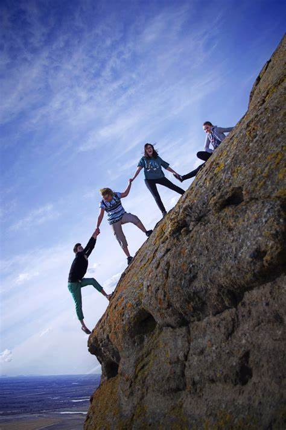
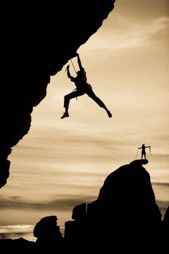

Welcome to the Peak Pursuers Climbing Club! Founded in 2007 by a group of enthusiastic and dedicated climbers, our club has grown into a vibrant community of more than 500 members, spanning all ages and levels of climbing ability. We are based in Boulder, Colorado, a city renowned for its world-class climbing destinations and surrounded by the stunning Rocky Mountains. Our club is more than just a group of climbing enthusiasts; we are a tight-knit family that supports each other in our climbing journeys and shares a passion for adventure and exploration.
Our members enjoy a wide range of benefits including access to our private indoor climbing gym, discounts at local outdoor gear shops, organized trips to climbing destinations around the world, and participation in our skill-building workshops and clinics. We also organize regular social events, volunteer opportunities, and environmental stewardship activities. We pride ourselves on fostering a welcoming and inclusive environment for climbers of all backgrounds and abilities. Whether you are new to climbing or an experienced mountaineer, the Peak Pursuers Climbing Club provides a supportive and engaging community to help you reach new heights.